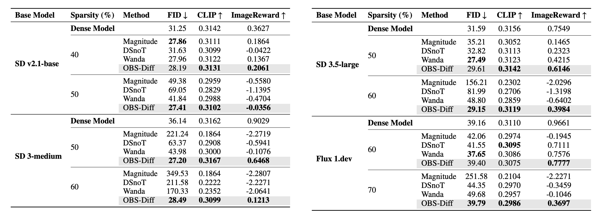
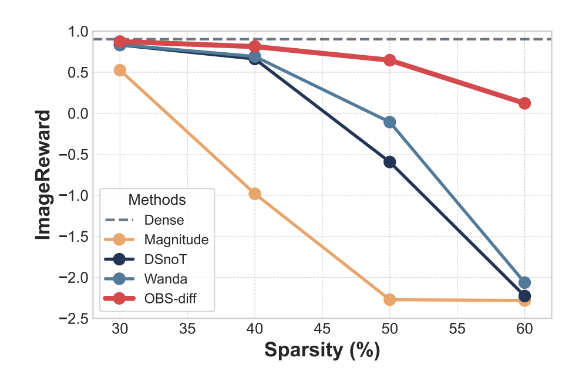
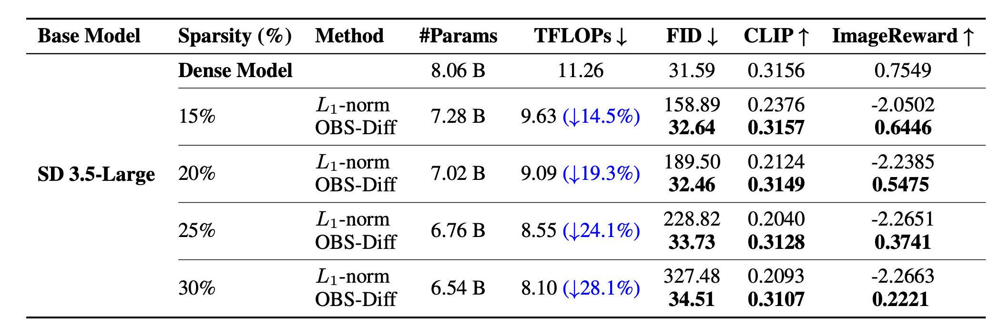
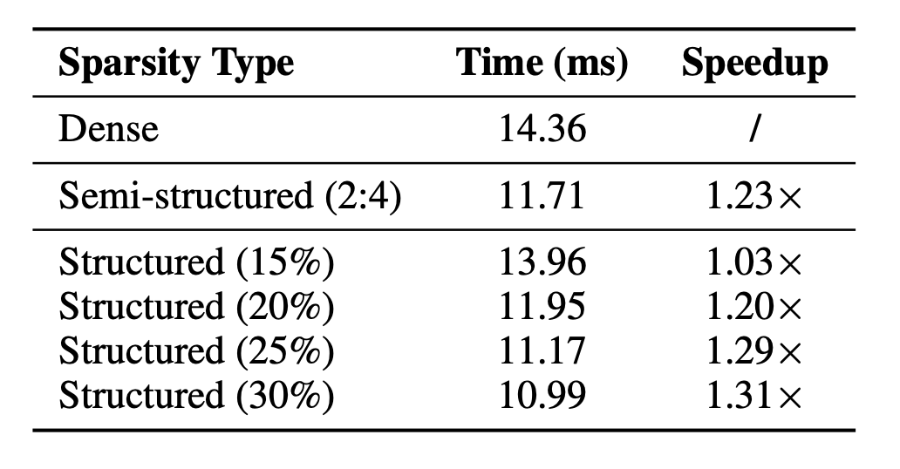
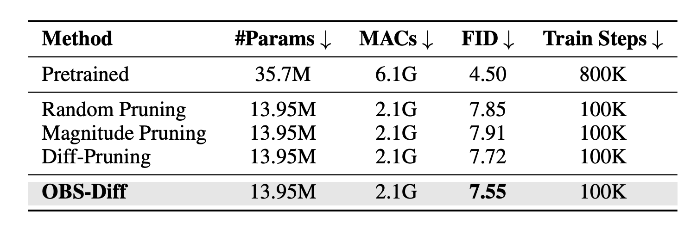

Main Results

Quantitative comparison of unstructured pruning methods on text-to-image diffusion models. The best result per metric is highlighted in bold.

ImageReward vs. sparsity for various unstructured pruning methods on SD3-Medium.

Performance of semi-structured (2:4 sparsity pattern) pruning on the Stable Diffusion 3.5-Large model. Pruning is applied to the 3rd through 25th MMDiT blocks. The best result is shown in bold.

Performance of structured pruning on the Stable Diffusion 3.5-Large model across various sparsity levels. The first and last transformer blocks were excluded from the pruning process. The TFLOPs metric represents the theoretical computational cost for a single forward pass of the entire transformer. For each sparsity group, the best result per metric is highlighted in bold.

Wall-clock inference time (ms) and speedup for a single MMDiT block under various sparsity schemes.
